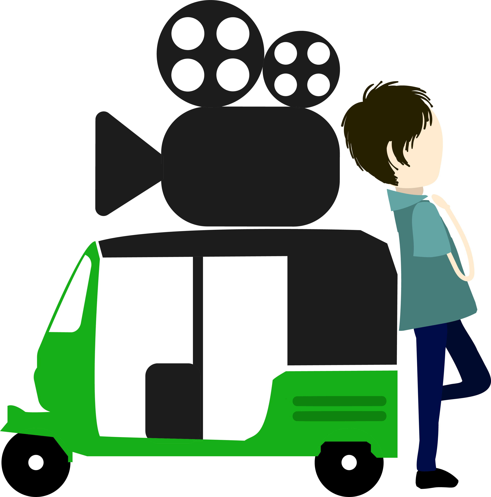

My heart tells a story.
Sandeep Mohan
filmmaker . writer . traveller
I make films only so that I can express what I cannot otherwise.
I never like over-analysing a film or music or any piece of art. If I "feel" for it in my heart, then it's good. If it doesn't make me feel, then it doesn't work for me. Simple. I try to make my films too keeping this philosophy in mind.
Check out Movies
I love Cinema. I love Travel.
So I came up with "The Great Indian Travelling Cinema"
So I came up with "The Great Indian Travelling Cinema"
It's an experiment. I carry a Projector and screen my films in alternative spaces like Cafes, Pubs, Art Galleries, Colleges, Offices etc. These private screenings allow me to get a first hand feel of how the film is connecting with the audience.
Know more

It is a long journey and I am hoping eventually it will all add up as a good joke
I am not here to change the system. But I am here to tell my stories, express myself, and then one morning, die.